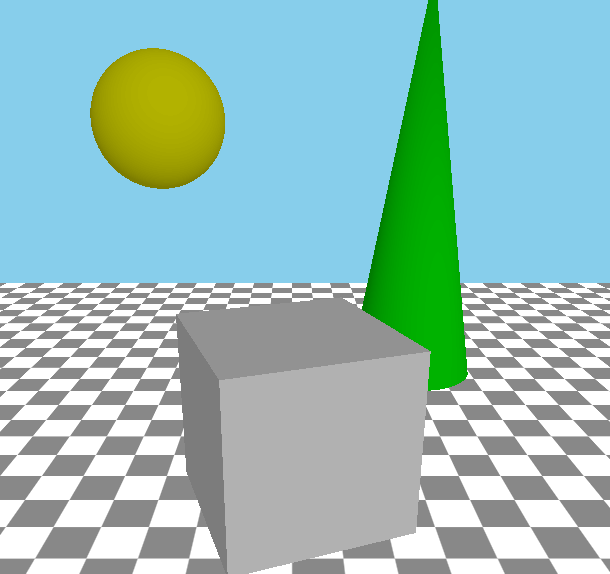
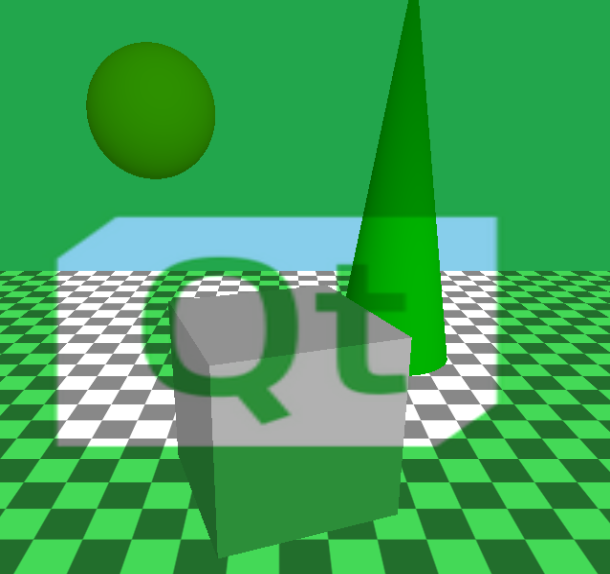
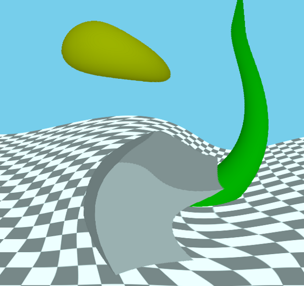

Effect QML Type
Base component for creating a post-processing effect. More...
| Import Statement: | import QtQuick3D |
| Inherits: |
Properties
- passes : list
Detailed Description
The Effect type allows the user to implement their own post-processing effects for QtQuick3D.
Post-processing effects
A post-processing effect is conceptually very similar to Qt Quick's ShaderEffect item. When an effect is present, the scene is rendered into a separate texture first. The effect is then applied by drawing a textured quad to the main render target, depending on the render mode of the View3D. The effect can provide a vertex shader, a fragment shader, or both. Effects are always applied on the entire scene, per View3D.
Effects are associated with the SceneEnvironment in the SceneEnvironment::effects property. The property is a list: effects can be chained together; they are applied in the order they are in the list, using the previous step's output as the input to the next one, with the last effect's output defining the contents of the View3D.
Note: SceneEnvironment and ExtendedSceneEnvironment provide a set of built-in effects, such as depth of field, glow/bloom, lens flare, color grading, and vignette. Always consider first if these are sufficient for the application's needs, and prefer using the built-in facilities instead of implementing a custom post-processing effect.
Effects are similar to custom materials in many ways. However, a custom material is associated with a model and is responsible for the shading of that given mesh. Whereas an effect's vertex shader always gets a quad (for example, two triangles) as its input, while its fragment shader samples the texture with the scene's content.
Unlike custom materials, effects support multiple passes. For many effects this it not necessary, and when there is a need to apply multiple effects, identical results can often be achieved by chaining together multiple effects in the SceneEnvironment. This is demonstrated by the Custom Effect example as well. However, passes have the possibility to request additional color buffers (texture), and specify which of these additional buffers they output to. This allows implementing more complex image processing techniques since subsequent passes can then use one or more of these additional buffers, plus the original scene's content, as their input. If necessary, these additional buffers can have an extended lifetime, meaning their content is preserved between frames, which allows implementing effects that rely on accumulating content from multiple frames, such as, motion blur.
When compared to Qt Quick's 2D ShaderEffect, the 3D post-processing effects have the advantage of being able to work with depth buffer data, as well as the ability to implement multiple passes with intermediate buffers. In addition, the texture-related capabilities are extended: Qt Quick 3D allows more fine-grained control over filtering modes, and allows effects to work with texture formats other than RGBA8, for example, floating point formats.
Note: Post-processing effects are currently available when the View3D has its renderMode set to Offscreen, Underlay or Overlay. Effects will not be rendered for Inline mode.
Note: When using post-processing effects, the application-provided shaders should expect linear color data without tonemapping applied. The tonemapping that is performed during the main render pass (or during skybox rendering, if there is a skybox) when tonemapMode is set to a value other than SceneEnvironment.TonemapModeNone, is automatically disabled when there is at least one post-processing effect specified in the SceneEnvironment. The last effect in the chain (more precisely, the last pass of the last effect in the chain) will automatically get its fragment shader amended to perform the same tonemapping the main render pass would.
Note: Effects that perform their own tonemapping should be used in a SceneEnvironment that has the built-in tonemapping disabled by setting tonemapMode to SceneEnvironment.TonemapModeNone.
Note: By default the texture used as the effects' input is created with a floating point texture format, such as 16-bit floating point RGBA. The output texture's format is the same since by default it follows the input format. This can be overridden using Buffer and an empty name. The default RGBA16F is useful because it allows working with non-tonemapped linear data without having the color values outside the 0-1 range clamped.
Exposing data to the shaders
Like with CustomMaterial or ShaderEffect, the dynamic properties of an Effect object can be changed and animated using the usual QML and Qt Quick facilities, and the values are exposed to the shaders automatically. The following list shows how properties are mapped:
- bool, int, real -> bool, int, float
- QColor, color -> vec4, and the color gets converted to linear, assuming sRGB space for the color value specified in QML. The built-in Qt colors, such as
"green"are in sRGB color space as well, and the same conversion is performed for all color properties of DefaultMaterial and PrincipledMaterial, so this behavior of Effect matches those. - QRect, QRectF, rect -> vec4
- QPoint, QPointF, point, QSize, QSizeF, size -> vec2
- QVector2D, vector2d -> vec3
- QVector3D, vector3d -> vec3
- QVector4D, vector4d -> vec4
- QMatrix4x4, matrix4x4 -> mat4
- QQuaternion, quaternion -> vec4, scalar value is
w - TextureInput -> sampler2D or samplerCube, depending on whether Texture or CubeMapTexture is used in the texture property of the TextureInput. Setting the enabled property to false leads to exposing a dummy texture to the shader, meaning the shaders are still functional but will sample a texture with opaque black image content. Pay attention to the fact that properties for samplers must always reference a TextureInput object, not a Texture directly. When it comes to the Texture properties, the source, tiling, and filtering related ones are the only ones that are taken into account implicitly with effects, as the rest (such as, UV transformations) is up to the custom shaders to implement as they see fit.
Note: When a uniform referenced in the shader code does not have a corresponding property, it will cause a shader compilation error when processing the effect at run time. There are some exceptions to this, such as, sampler uniforms, that get a dummy texture bound when no corresponding QML property is present, but as a general rule, all uniforms and samplers must have a corresponding property declared in the Effect object.
Getting started with user-defined effects
A custom post-processing effect involves at minimum an Effect object and a fragment shader snippet. Some effects will also want a customized vertex shader as well.
As a simple example, let's create an effect that combines the scene's content with an image, while further altering the red channel's value in an animated manner:
Effect { id: simpleEffect property TextureInput tex: TextureInput { texture: Texture { source: "image.png" } } property real redLevel NumberAnimation on redLevel { from: 0; to: 1; duration: 5000; loops: -1 } passes: Pass { shaders: Shader { stage: Shader.Fragment shader: "effect.frag" } } } |
void MAIN()
{
vec4 c = texture(tex, TEXTURE_UV);
c.r *= redLevel;
FRAGCOLOR = c * texture(INPUT, INPUT_UV);
}
|
Here the texture with the image image.png is exposed to the shader under the name tex. The value of redLevel is available in the shader in a float uniform with the same name.
The fragment shader must contain a function called MAIN. The final fragment color is determined by FRAGCOLOR. The main input texture, with the contents of the View3D's scene, is accessible under a sampler2D with the name INPUT. The UV coordinates from the quad are in INPUT_UV. These UV values are always suitable for sampling INPUT, regardless of the underlying graphics API at run time (and so regardless of the Y axis direction in images since the necessary adjustments are applied automatically by Qt Quick 3D). Sampling the texture with our external image is done using TEXTURE_UV. INPUT_UV is not suitable in cross-platform applications since V needs to be flipped to cater for the coordinate system differences mentioned before, using a logic that is different for textures based on images and textures used as render targets. Fortunately this is all taken care of by the engine so the shader need no further logic for this.
Once simpleEffect is available, it can be associated with the effects list of a the View3D's SceneEnvironment:
environment: SceneEnvironment {
effects: [ simpleEffect ]
}
The results would look something like the following, with the original scene on the left and with the effect applied on the right:
 |  |
Note: The shader property value in Shader is a URL, as is the custom in QML and Qt Quick, referencing the file containing the shader snippet, and works very similarly to ShaderEffect or Image.source. Only the file and qrc schemes are supported.. It is also possible to omit the file scheme, allowing to specify a relative path in a convenient way. Such a path is resolved relative to the component's (the .qml file's) location.
Note: Shader code is always provided using Vulkan-style GLSL, regardless of the graphics API used by Qt at run time.
Note: The vertex and fragment shader code provided by the effect are not full, complete GLSL shaders on their own. Rather, they provide a MAIN function, and optionally a set of VARYING declarations, which are then amended with further shader code by the engine.
Effects with vertex shaders
A vertex shader, when present, must provide a function called MAIN. In the vast majority of cases the custom vertex shader will not want to provide its own calculation of the homogenous vertex position, but it is possible using POSITION, VERTEX, and MODELVIEWPROJECTION_MATRIX. When POSITION is not present in the custom shader code, a statement equivalent to POSITION = MODELVIEWPROJECTION_MATRIX * vec4(VERTEX, 1.0); will be injected automatically by Qt Quick 3D.
To pass data between the vertex and fragment shaders, use the VARYING keyword. Internally this will then be transformed into the appropriate vertex output or fragment input declaration. The fragment shader can use the same declaration, which then allows to read the interpolated value for the current fragment.
Let's look at example, that is in effect very similar to the built-in DistortionSpiral effect:
VARYING vec2 center_vec;
void MAIN()
{
center_vec = INPUT_UV - vec2(0.5, 0.5);
center_vec.y *= INPUT_SIZE.y / INPUT_SIZE.x;
}
|
VARYING vec2 center_vec;
void MAIN()
{
float radius = 0.25;
float dist_to_center = length(center_vec) / radius;
vec2 texcoord = INPUT_UV;
if (dist_to_center <= 1.0) {
float rotation_amount = (1.0 - dist_to_center) * (1.0 - dist_to_center);
float r = radians(360.0) * rotation_amount / 4.0;
mat2 rotation = mat2(cos(r), sin(r), -sin(r), cos(r));
texcoord = vec2(0.5, 0.5) + rotation * (INPUT_UV - vec2(0.5, 0.5));
}
FRAGCOLOR = texture(INPUT, texcoord);
}
|
The Effect object's passes list should now specify both the vertex and fragment snippets:
passes: Pass {
shaders: [
Shader {
stage: Shader.Vertex
shader: "effect.vert"
},
Shader {
stage: Shader.Fragment
shader: "effect.frag"
}
]
}
The end result looks like the following:
 |
Special keywords in effect shaders
VARYING- Declares a vertex output or fragment input, depending on the type of the current shader.MAIN- This function must always be present in an effect shader.FRAGCOLOR-vec4- The final fragment color; the output of the fragment shader. (fragment shader only)POSITION-vec4- The homogenous position calculated in the vertex shader. (vertex shader only)MODELVIEWPROJECTION_MATRIX-mat4- The transformation matrix for the screen quad.VERTEX-vec3- The vertices of the quad; the input to the vertex shader. (vertex shader only)INPUT-sampler2D- The sampler for the input texture with the scene rendered into it, unless a pass redirects its input via a BufferInput object, in which caseINPUTrefers to the additional color buffer's texture referenced by the BufferInput.INPUT_UV-vec2- UV coordinates for samplingINPUT.TEXTURE_UV-vec2- UV coordinates suitable for sampling a Texture with contents loaded from an image file.INPUT_SIZE-vec2- The size of theINPUTtexture, in pixels.OUTPUT_SIZE-vec2- The size of the output buffer, in pixels. Often the same asINPUT_SIZE, unless the pass outputs to an extra Buffer with a size multiplier on it.FRAME-float- A frame counter, incremented after each frame in the View3D.DEPTH_TEXTURE-sampler2D- A depth texture with the depth buffer contents with the opaque objects in the scene. Like with CustomMaterial, the presence of this keyword in the shader triggers generating the depth texture automatically.
Building multi-pass effects
A multi-pass effect often uses more than one set of shaders, and takes the output and commands properties into use. Each entry in the passes list translates to a render pass drawing a quad into the pass's output texture, while sampling the effect's input texture and optionally other textures as well.
The typical outline of a multi-pass Effect can look like the following:
passes: [
Pass {
shaders: [
Shader {
stage: Shader.Vertex
shader: "pass1.vert"
},
Shader {
stage: Shader.Fragment
shader: "pass1.frag"
}
// This pass outputs to the intermediate texture described
// by the Buffer object.
output: intermediateColorBuffer
],
},
Pass {
shaders: [
Shader {
stage: Shader.Vertex
shader: "pass2.vert"
},
Shader {
stage: Shader.Fragment
shader: "pass2.frag"
}
// The output of the last pass needs no redirection, it is
// the final result of the effect.
],
commands: [
// This pass reads from the intermediate texture, meaning
// INPUT in the shader will refer to the texture associated
// with the Buffer.
BufferInput {
buffer: intermediateColorBuffer
}
]
}
]
What is intermediateColorBuffer?
Buffer { id: intermediateColorBuffer name: "tempBuffer" // format: Buffer.RGBA8 // textureFilterOperation: Buffer.Linear // textureCoordOperation: Buffer.ClampToEdge }
The commented properties are not necessary if the desired values match the defaults.
Internally the presence of this Buffer object and referencing it from the output property of a Pass leads to creating a texture with a size matching the View3D, and so the size of the implicit input and output textures. When this is not desired, the sizeMultiplier property can be used to get an intermediate texture with a different size. This can lead to the INPUT_SIZE and OUTPUT_SIZE uniforms in the shader having different values.
By default the Effect cannot count on textures preserving their contents between frames. When a new intermediate texture is created, it is cleared to vec4(0.0). Afterwards, the same texture can be reused for another purpose. Therefore, effect passes should always write to the entire texture, without making assumptions about their content at the start of the pass. There is an exception to this: Buffer objects with bufferFlags set to Buffer.SceneLifetime. This indicates that the texture is permanently associated with a pass of the effect and it will not be reused for other purposes. The contents of such color buffers is preserved between frames. This is typically used in a ping-pong fashion in effects like motion blur: the first pass takes the persistent buffer as its input, in addition to the effects main input texture, outputting to another intermediate buffer, while the second pass outputs to the persistent buffer. This way in the first frame the first pass samples an empty (transparent) texture, whereas in subsequent frames it samples the output of the second pass from the previous frame. A third pass can then blend the effect's input and the second pass' output together.
The BufferInput command type is used to expose custom texture buffers to the render pass.
For instance, to access someBuffer in the render pass shaders under the name, mySampler, the following can be added to its command list:
BufferInput { buffer: someBuffer; sampler: "mySampler" }
If the sampler name is not specified, INPUT will be used as default.
Buffers can be useful to share intermediate results between render passes.
To expose preloaded textures to the effect, TextureInput should be used instead. These can be defined as properties of the Effect itself, and will automatically be accessible to the shaders by their property names.
property TextureInput tex: TextureInput {
texture: Texture { source: "image.png" }
}
Here tex is a valid sampler in all shaders of all the passes of the effect.
When it comes to uniform values from properties, all passes in the Effect read the same values in their shaders. If necessary it is possible to override the value of a uniform just for a given pass. This is achieved by adding the SetUniformValue command to the list of commands for the pass.
Note: The target of the pass-specific uniform value setter can only refer to a name that is the name of a property of the effect. It can override the value for a property's corresponding uniform, but it cannot introduce new uniforms.
Performance considerations
Be aware of the increased resource usage and potentially reduced performance when using post-processing effects. Just like with Qt Quick layers and ShaderEffect, rendering the scene into a texture and then using that to texture a quad is not a cheap operation, especially on low-end hardware with limited fragment processing power. The amount of additional graphics memory needed, as well as the increase in GPU load both depend on the size of the View3D (which, on embedded devices without a windowing system, may often be as big as the screen resolution). Multi-pass effects, as well as applying multiple effects increase the resource and performance requirements further.
Therefore, it is highly advisable to ensure early on in the development lifecycle that the targeted device and graphics stack is able to cope with the effects included in the design of the 3D scene at the final product's screen resolution.
While unavoidable with techniques that need it, DEPTH_TEXTURE implies an additional rendering pass to generate the contents of that texture, which can also present a hit on less capable hardware. Therefore, use DEPTH_TEXTURE in the effect's shaders only when essential.
The complexity of the operations in the shaders is also important. Just like with CustomMaterial, a sub-optimal fragment shader can easily lead to reduced rendering performance.
Be cautious with sizeMultiplier in Buffer when values larger than 1 are involved. For example, a multiplier of 4 means creating and then rendering to a texture that is 4 times the size of the View3D. Just like with shadow maps and multi- or supersampling, the increased resource and performance costs can quickly outweigh the benefits from better quality on systems with limited GPU power.
See also Shader, Pass, Buffer, BufferInput, and Qt Quick 3D - Custom Effect Example.